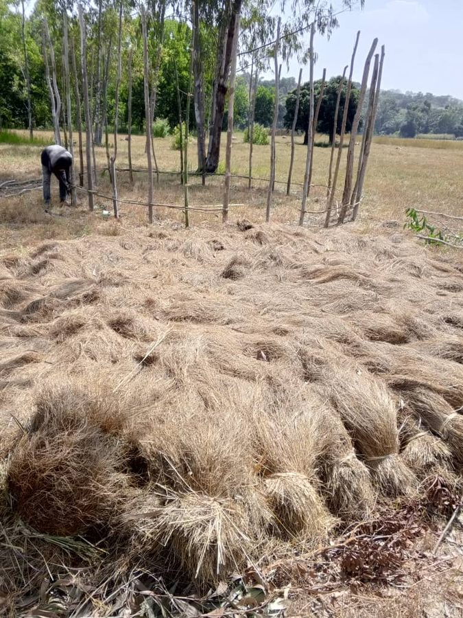

Our Story
From Guinea's Fields
to Your Kitchen
Two Fulanis is the consumer brand of Two Fulanis, founded in Guinea — the world's leading producer of fonio. Our mission is to bring this exceptional grain to international tables while keeping its roots firmly in the communities that have grown it for generations.
The brand is named for its two Fulani sisters: Oumou Sow, who leads operations from Guinea and the United States, and Saran Sow, who drives international markets from Dubai and across Asia. Together they combine deep agricultural knowledge with global business reach.
Our fonio is grown on our own farmland in the Fouta Djallon and Faranah Region of Guinea, harvested by hand, then cleaned, steamed, dried and packaged in our fully operational processing facility in Forécariah — all to international food safety standards.
one vision
at our facility
fonio